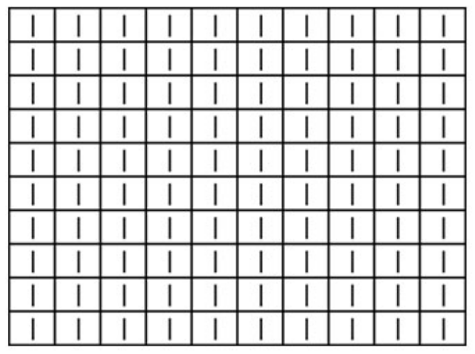
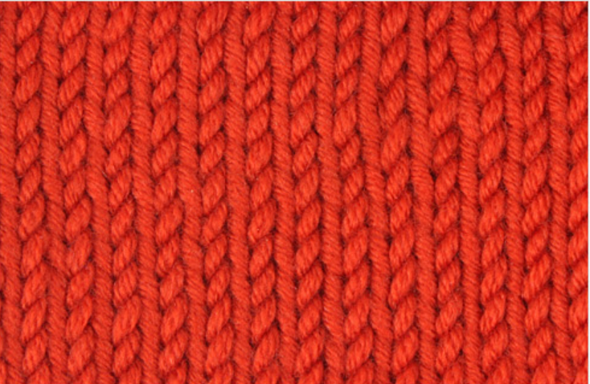

메리야스 뜨기(stockinette stitch)
영문 도안 표시: St, stockinette stitch, stocking stitch
- 홀수단: 단 끝까지 겉뜨기
- 짝수단: 단 끝까지 안뜨기
위 과정을 원하는 길이만큼 반복한다
도안 패턴 ▼

※도안 읽는 방법
- (읽는 방항: 오른쪽 → 왼쪽) 홀수단은 겉뜨기 안뜨기 기호 그대로 뜬다
- (읽는 방항: 왼쪽 → 오른쪽) 짝수단은 기호와 반대로 뜬다 (겉뜨기 기호는 안뜨기, 안뜨기 기호는 겉뜨기)